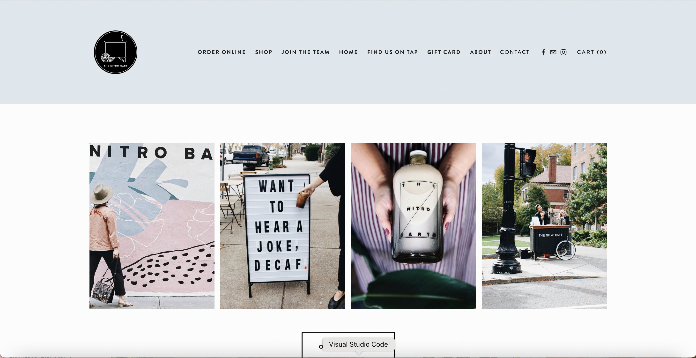
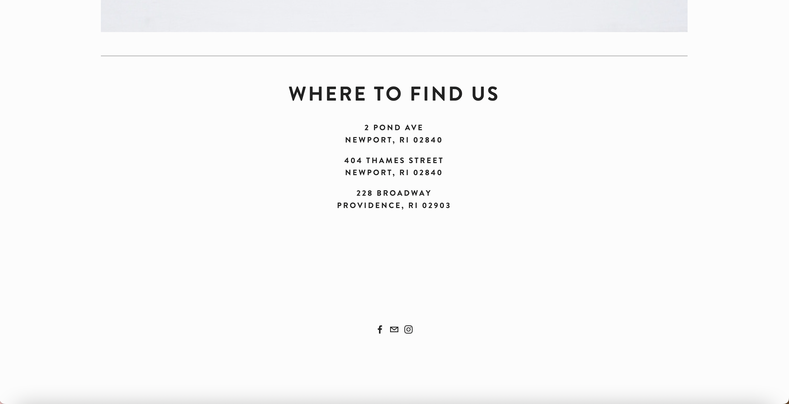

Part 1: Identifying Usability Problems
The website I chose to redesign was Nitro Bar, a cafe with two locations in Newport and one in Providence. Click here to see the original page.

Initial page after entering the website

Interface after clicking "Merch"

"Home" page (part 1)

"Home" page (part 2)

"Home" page (part 3)

"Home" page (part 4)
Learnability
Is it easy to learn for new users?
- When users first click on the link to enter the website, there’s only two buttons that users can select so it’s unclear whether that screen is the homepage and/or if it leads to other pages (menu, contact us, about, etc).
- Once the user plays around with the two buttons, they will see that selecting “Merch” will bring them to the main landing page (second screenshot above). This is misleading because “Merch” doesn’t exclusively lead users to the shopping page; it opens a new tab with a different interface, almost like a portal into another dimension of the website.
- When users click on the icon on the top left of the navigation bar, it brings them back to the initial interface (in the screenshot). This causes a lot of confusion over what the main landing page is and what the purpose of the initial interface is if it doesn’t serve an important role.
Memorability
Is it easy to recall what to do for casual users?
- On the initial interface, the label of the button being “Merch” can still be misleading.
- On the supposed "Home" page, there might be confusion over what links go to what pages.
- Once users know that they are supposed to click on “Merch” to access the rest of the main landing page and navigation bar, they shouldn’t have an issue remembering what to do for the future, but it would still be more convenient if the website link brought them directly to the homepage.
Efficiency
Can typical tasks be done quickly for frequent users?
- The navigation bar of the main landing is still disorganized: “Merch” brings the user to the shopping page, which is the second tab in the navigation bar (“Order Online” is the first tab) whereas the “Home” tab is the fourth element of the navigation bar when typically the homepage should be the first screen of a website.
- The buttons and layout on the "Home" page are disorganized too. It's hard to see the buttons that are placed on top of the images. There's also no structure to the way the buttons and pictures are displayed.
- One major aspect that I think users would want to see on the website is the cafe’s menu. In the current design there’s no link or picture to a menu.
- Some of the other links aren't necessarily essential.
Accessibility
Do you agree with the problems detected?
- The detected accessibility problems indicate that the social media buttons at the bottom of the page and there are some suspicious alternative texts. It shows alerts for 6 suspicious alternative texts, 2 possible headings, and 6 Noscript elements as well as 5 errors: 2 empty buttons and 3 empty links. I agree with these problems because as I was exploring the page myself, I found that a few of the links in the navigation bar did not work, and some linked to the same page. There are, however, 9 ARIA labels overall, which I think is a reasonable amount, given how concise the webpage is.